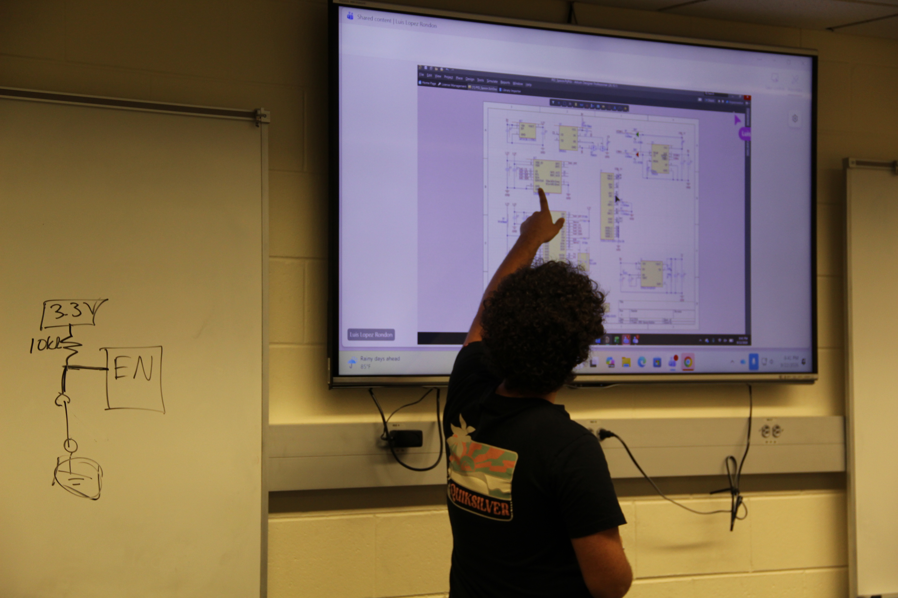
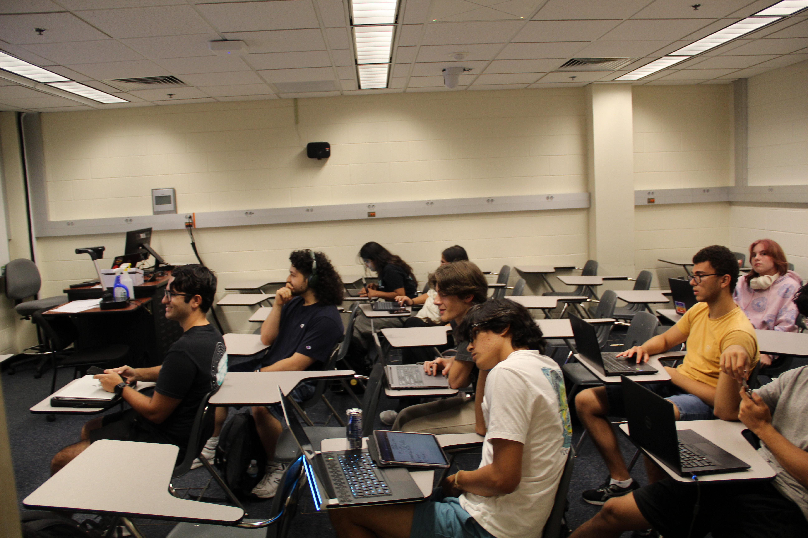

Overview
The PID-Stabilized Parkinson's Spoon is an IEEE at USF EXO project to build an assistive spoon for people with hand tremors. An IMU on the handle measures the hand's motion. A microcontroller runs a PID loop that drives servos to tilt the spoon head the opposite way, keeping it level while the hand shakes.
My part was the custom PCB that runs the whole device; the control loop was handled separately.
The PCB
The board is built around an STM32G431 microcontroller and an LSM6DSV16X 6-axis IMU. It runs off a single-cell (1S) LiPo, with USB-C for charging and programming.
The battery circuitry uses a TP4056 charger with DW01A and FS8205 protection against overcharge, over-discharge and short circuits. Since a 1S cell is only about 3.7V and the servos need more, I designed a custom 5V boost converter to give them their own power rail.
Teaching PCB design
I also used the spoon as a teaching project. I led an Altium workshop where about 10 newer EXO members learned the PCB design process: researching parts, reading datasheets, drawing schematics and laying out boards. Each of them designed their first PCB, a 6-axis IMU board.


What's next
- Finalize the layout and order boards
- Assemble and test the PCB